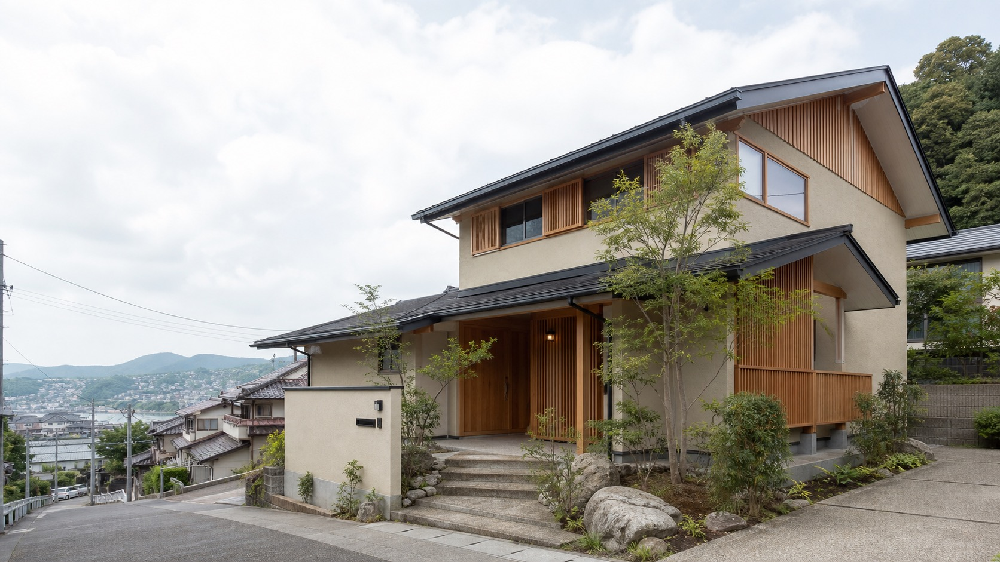
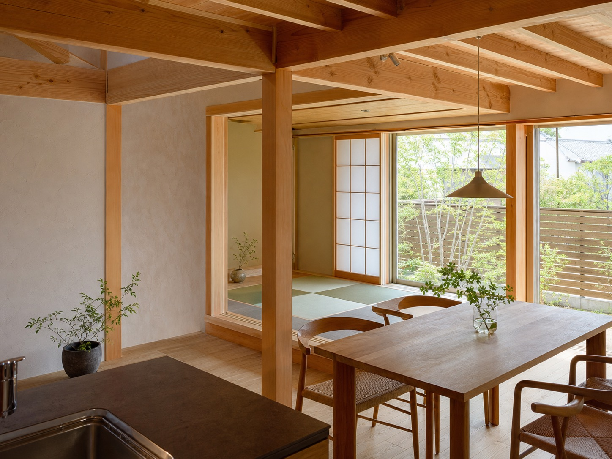
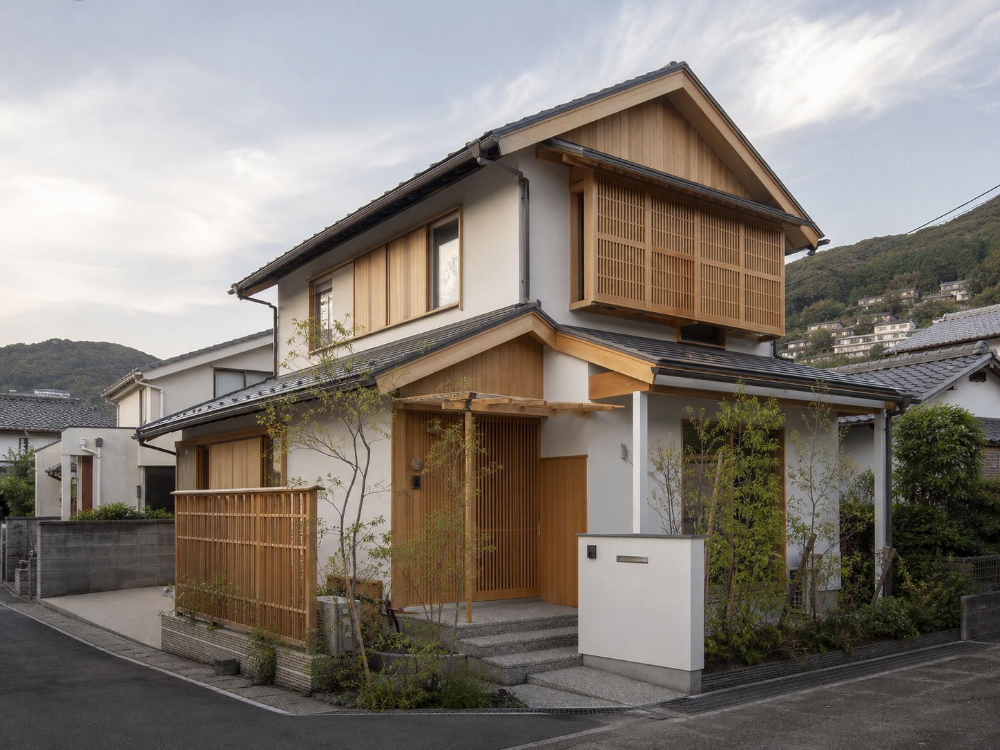
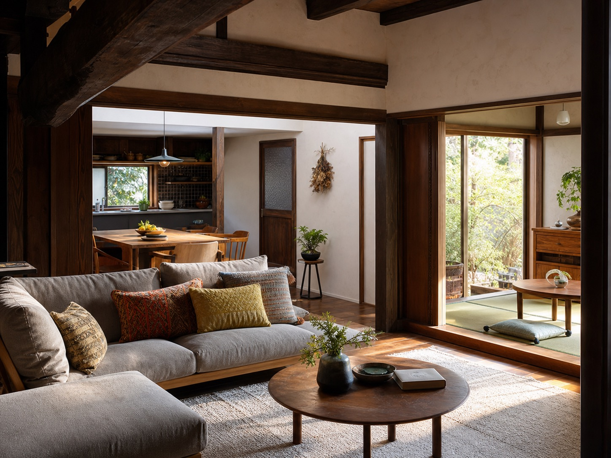
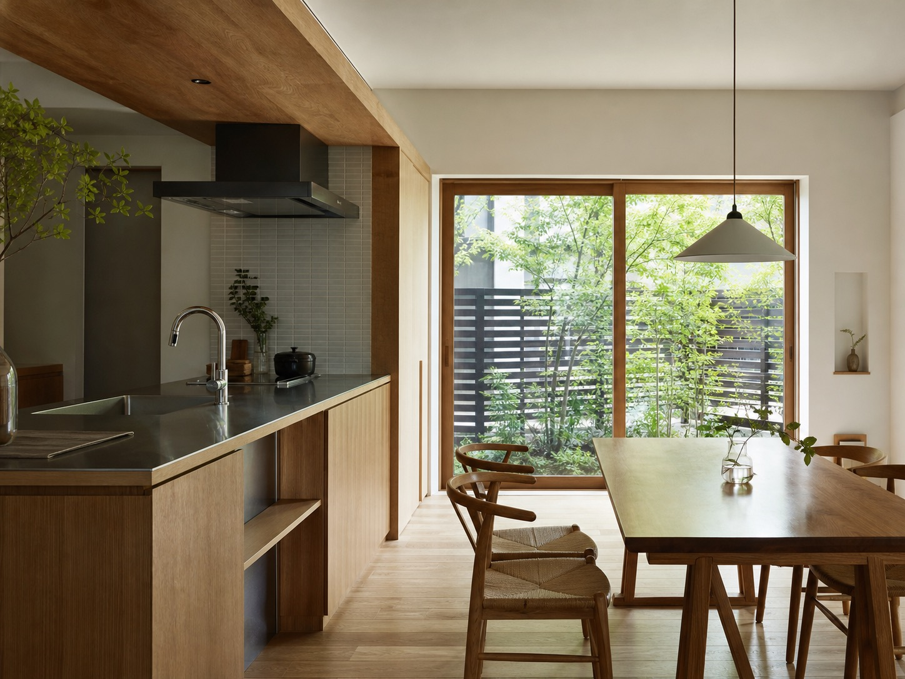

長崎の新築・リフォーム・設計施工
笑いの絶えない生活空間を、職人の手で。
自然素材、健康への配慮、細やかな打合せ。アクトホームらしい住まいづくりを、伝わるサイトへ再編集した提案用デモです。
「夢 + 知恵 + 技術」を、今のWebで伝わる言葉に。
既存サイトでは、お客様との信頼関係、きめ細かな打合せ、職人と一体で住みたい家を形にする姿勢が中心に語られています。このデモでは、その想いを短いコピーと余白、自然素材の写真で見せる構成にしています。

新築から古民家リノベーション、店舗まで。
公式サイトで確認できる事業内容をもとに、相談しやすい入口へ整理しました。実際の公開前には各サービスの現在の対応範囲を確認します。
- 01木造注文住宅デザイン・設計・施工・管理を一貫して対応。
- 02リフォーム工事全般増改築、外部改修、エクステリア、ガーデニング等。
- 03リノベーション既存建物の趣を活かした改修。古民家改修の受賞事例あり。
- 04小規模建築・店舗S造・RC造等の小規模建築、店舗の設計施工。
自然素材と検査体制まで、見せるべき強みがある。
自然素材へのこだわり
シラスそとん壁、珪藻土入りせっこうプラスター、漆喰、ルナファーザー、アウロ塗料などの記載を確認。
健康・省エネへの視点
長期優良住宅、ゼロエネルギー住宅、認定低炭素住宅などに触れ、快適で健康な暮らしを訴求。
第三者機関による検査
日本住宅保証検査機構（JIO）登録店など、保証・検査に関わる加盟団体を掲載。
設計施工の体制
一級建築士事務所登録、建設業許可、建築士・施工管理士等の資格者情報を確認。
施工事例は「新築・リフォーム・店舗」で見せる。
既存サイトでは施工事例カテゴリとして新築、リフォーム、店舗が確認できます。ここでは仮画像で構成し、公開時は実写真に差し替える前提です。



受賞事例・ブログへの導線も、相談のきっかけに。
既存サイトでは長崎県木造住宅コンクール、LIXIL MEMBERS CONTEST 2017の受賞事例、ブログ導線が確認できます。見学会情報は確認できなかったため、公開前に要確認です。
受賞事例
古民家リフォーム・リノベーションの魅力を、写真とストーリーで再構成。
ブログ・お知らせ
施工中の様子や職人の空気感を、問い合わせ前の安心材料に。
見学会・イベント
現在情報は要確認。実施があれば最終CTAとして強化。
会社概要
- 会社名
- 有限会社アクトホーム
- 代表取締役
- 水口 浩一
- 所在地
- 事務所：〒851-0121 長崎県長崎市宿町691-1
設計室：〒851-0122 長崎県長崎市界1-9-26 - TEL
- 095-838-7155
- FAX
- 095-838-7159
- メール
- info@acthome.jp / acthome@mx71.tiki.ne.jp
- 営業時間
- 要確認
- 休日
- 隔週土曜・日曜・祭日、お盆・年末年始休暇
- 設立
- 平成9年（1997年）
- 対応エリア
- 要確認（所在地・施工事例から長崎県内中心と推測されるため、公開前に確認）
家づくり・改修の相談を、迷わず始められる導線へ。
電話、メール、フォームをひとつの場所に整理。実サイト化時はフォーム送信先、個人情報保護方針、見学会予約の有無を確認します。